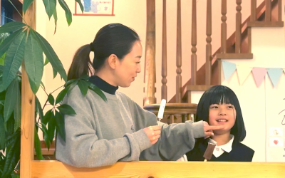

Scratchなどのビジュアルプログラミングから始め、「作ること」の楽しさを体験します。 ゲームやアニメーションを自分で作る喜びを通じて、論理的思考力・問題解決力といった これからの社会で欠かせない力を自然と育てます。
Features
このプログラムの特徴
ビジュアルプログラミングからスタート
ScratchなどブロックベースのGUIツールを使うので、文字入力が苦手なお子さまでもすぐに始められます。
ゲーム・アニメーション制作
自分だけのゲームやアニメーションを完成させる体験が、学ぶ意欲と達成感を引き出します。
エラーから学ぶ論理思考
うまく動かないときに「どこがおかしいか」を一緒に考える中で、粘り強く問題を解く力が育ちます。
発表・共有の機会
完成した作品を仲間に見せる機会を設けます。表現する喜びとともに、コミュニケーション力も養います。
Benefits
プログラミングで育つ力
プログラミングは「コードを書く力」だけでなく、さまざまな発達面でのプラス効果があります。
論理的思考力
順序立てて物事を考える習慣が身につきます
創造力・表現力
アイデアを形にする喜びを繰り返し体験します
問題解決力
エラーに向き合い修正する経験が粘り強さを育てます
達成感・自己効力感
動くプログラムを自分で作れた成功体験が自信になります
Steps
レベル別プログラム
入所時にスタッフが現在のスキルを確認し、最適なステップから始めます。
Scratchの基本操作・キャラクターを動かす
ブロックをつなげてキャラクターを動かすところからスタート。「動いた！」という最初の感動を大切にします。
イベント・繰り返し・条件分岐
「もし〜なら」「ずっと繰り返す」などプログラミングの核心概念を、遊びながら体験的に学びます。
ゲーム・クイズ・アニメーション制作
テーマを決めて作品を完成させます。途中でうまくいかない部分を修正しながら完成度を高めていきます。
オリジナル作品制作・発表
自分の好きなテーマで一から作品を企画・制作。完成したら仲間に発表し、フィードバックを受ける機会も設けます。
For